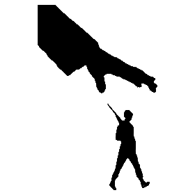

MIS
INFORMATION/misinfər'māSH(ə)n/
INFORMATION/misinfər'māSH(ə)n/
false or inaccurate information, especially that which
is deliberately intended to deceive.
is deliberately intended to deceive.
WHAT IS IT?
Inaccurate or deceptive information is called misinformation. It differs from disinformation, which is blatantly false information. Rumors are inaccurate and frequently unverified information that cannot be shown to be true or incorrect. They are information that is not assigned to a specific source.
CAUSES OF MISINFORMATION
Collapsing traditional business models
Digital transformation of newsrooms and storytelling
The creation of new news ecosystems
TYPES OF MISINFORMATION



RECOGNIZE, FIGHT, ELIMINATE

RESEARCH
Make sure to look up multiple articles, forums and other forms of information literature regarding your topic before making judgement.

SOURCE
Identify if the source of the information is legitimate, authentic and timely. Avoid sketchy sources or simply gossips from people as they are not a reliable source of information.
EVALUATE
Evaluate the information through a criteria, generally you will want to ask these questions: Is the information current? Is it relevant to your research? Is the author of the news legitimate and trustworthy? Is the information supported by evidences and credible sources? What purpose does the information serve?

FACT CHECK
As a general guideline, you should verify information by finding the same details from three more reliable sources. If you have any difficulty accomplishing this, it means that what you're reading is not entirely accurate.
GROUP 6 WEBSITE